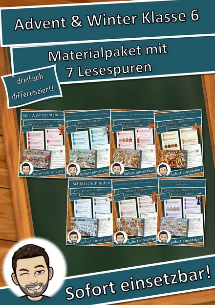
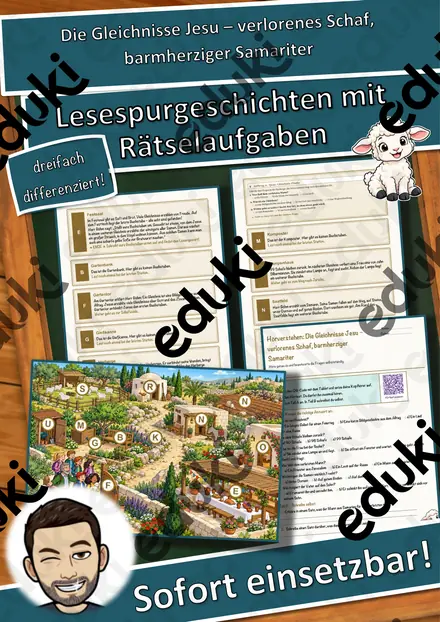
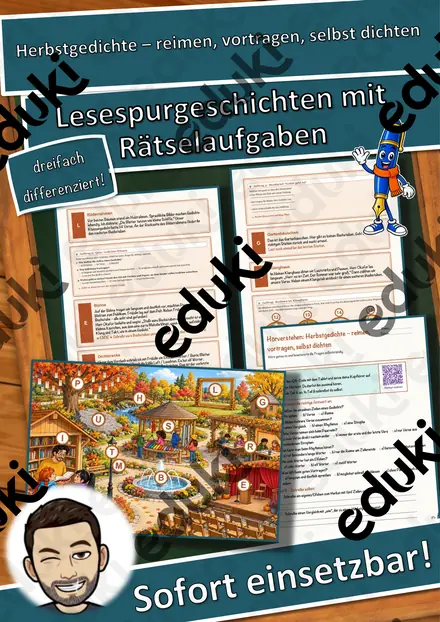
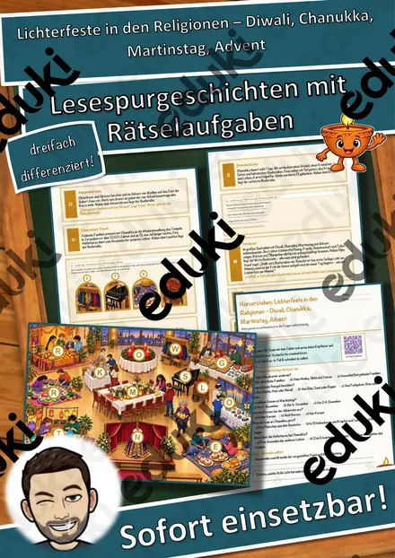
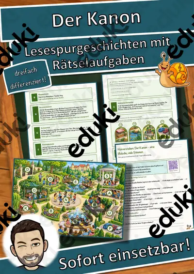
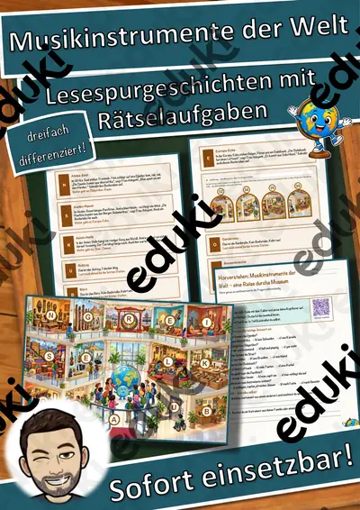
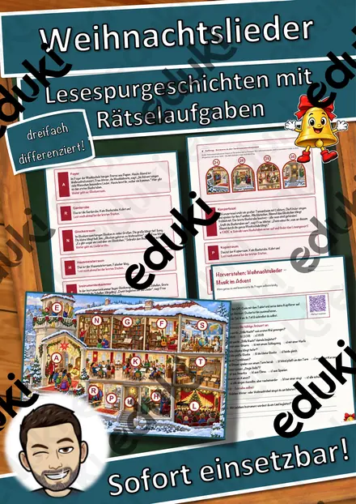
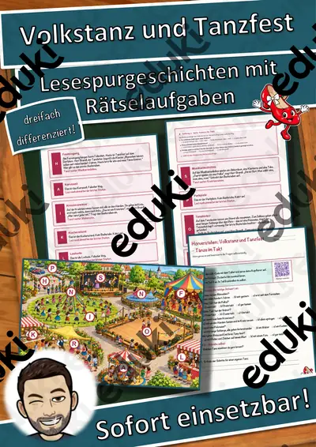

Materialpaket Herbst-Lesespuren für die 3. Klasse: 7 Lesespurgeschichten mit Rätselaufgaben (Kürbis, Igel, Laterne, Halloween & mehr)
7 Herbst-Lesespuren für die 3. Klasse – im Paket günstiger als einzeln
Mit diesem Materialpaket bekommst du sieben meiner Lesespurgeschichten für die 3. Klasse rund um den Herbst in einem Download: vom Kürbisfeld über den Herbstwald und die Igel-Auffangstation bis zum Laternenfest und zu Halloween. Alle Lesespuren sind sofort einsetzbar, dreifach differenziert (leicht ★ / mittel ★★ / schwer ★★★) und jeweils in Farbe und Schwarz-Weiß enthalten. So arbeitet deine ganze Klasse am selben Thema, und jedes Kind liest auf seinem Niveau.
Preisvorteil: Einzeln gekauft kosten die sieben Materialien regulär zusammen 27,93 €. Im Paket zahlst du nur 18,99 € und sparst damit rund 32 %.Die 7 Lesespuren im Paket
Der Kürbis (Klasse 3): Mia und Tom erleben mit Bäuerin Frau Herbst, wie aus einem kleinen Kern ein großer Kürbis wird – von Ranke, Blüte und Frucht bis zum Schnitzplatz. Sachwissen zum Wachsen einer Pflanze im Jahreskreis.
Der Kürbishof (Klasse 3): Eine Schulklasse geht mit Bäuerin Frau Kürbig den Weg des Kürbisses vom Saatbeet über Ernte, Waage und Sortiertisch bis in den Hofladen. Im Mittelpunkt stehen Anbau, Ernte und die Arbeit auf einem Hof im Herbst.
Der Herbstwald (Klasse 3): Opa Walter und Frieda entdecken, welche Früchte und Nüsse im Herbst reifen und wie Eichhörnchen und Eichelhäher ihre Wintervorräte verstecken. Die Kinder lernen, wie der Wald seine Tiere versorgt.
Die Igel-Auffangstation (Klasse 3): Emil und Marie begleiten einen geretteten Igel vom Wiegen und Untersuchen bis zur Auswilderung. Thema sind das Fettpolster, der Winterschlaf und die richtige Hilfe für Igel im Herbst.
Das Laternenfest (Klasse 3): Die Brüder Ben und Jonas gehen den Weg vom Laternenbasteln bis zum Umzug. Dabei erfahren die Kinder, warum die Tage im Herbst kürzer werden und worauf man im Dunkeln achten muss. Das Material ist bewusst weltlich gehalten.
Herbstgedichte – reimen, vortragen, selbst dichten (Klasse 3): Auf einem Gedichtepfad durch den Herbstpark lernen die Kinder Vers, Strophe, Paar- und Kreuzreim, Rhythmus und ausdrucksvolles Vortragen kennen und schreiben am Ende ein eigenes Elfchen. Dazu gibt es kurze Auszüge aus gemeinfreien Herbstgedichten von Fontane, Rilke und Hebbel.
Halloween – woher das Fest kommt und wie man es in Irland feiert (Klasse 3): Niamh, deren Familie aus Irland stammt, zeigt ihrer Klasse die Wurzeln des Festes: Samhain, Rübenlaternen, barmbrack, apple bobbing und guising, bis hin zur Reise des Festes nach Amerika. Freundlich und fröhlich, ganz ohne Gruseln, mit ersten englischen Wörtern wie pumpkin, turnip, costume und lantern.
Lehrplanbezug (LehrplanPLUS Bayern, Grundschule, Jahrgangsstufe 3)Deutsch – Lesen, mit Texten und weiteren Medien umgehen: Die Kinder lesen sinnentnehmend, wenden Lesestrategien an, entnehmen gezielt Informationen und erschließen Texte, denn nur wer genau liest, findet die nächste Station.
Deutsch – Sprechen und Zuhören: Das Hörverstehen per QR-Code schult konzentriertes Zuhören. Die Herbstgedichte fördern ausdrucksvolles Vortragen vor anderen.
Deutsch – Schreiben: Die Kinder füllen Steckbriefe aus, beantworten Fragen schriftlich und schreiben eigene Elfchen.
Heimat- und Sachunterricht – Natur und Umwelt: Pflanzen und Tiere im Herbst (Kürbis, Wald, Igel), Wachstum und Ernte, Winterschlaf und Wintervorräte, kürzere Tage und Sicherheit im Dunkeln.
Heimat- und Sachunterricht / Englisch: Bräuche im Jahreslauf und interkulturelles Lernen am Beispiel von Halloween in Irland, mit ersten englischen Wörtern.
So funktioniert eine Lesespur
Die Kinder lesen ab START einen kurzen Abschnitt. Am Ende verrät ein Hinweis den nächsten Ort, den sie auf dem farbigen Plan suchen. Dort lesen sie weiter. An jeder richtigen Station sammeln sie einen Buchstaben, und eingeplante Sackgassen dienen der Selbstkontrolle. Am Ende ergeben die umgestellten Buchstaben ein geheimes Lösungswort.
Das ist in jeder Lesespur enthalten
Lesespurgeschichte in 3 Niveaus (leicht ★, mittel ★★, schwer ★★★)farbiger Plan als Suchkartevier Rätselaufgaben auf dem Weg, z. B. Zuordnen, Quiz, Rechenaufgabe und Steckbrief
Hörverstehen mit QR-Code zum Hörtext, damit die Kinder selbstständig mit Kopfhörern hören
Rätselseite mit Wörter-Suchsel und Wissensfragen
Ausmalbild zum Thema, z. B. für schnelle Kinderausführliches Lösungsblatt für die Lehrkraftalles zusätzlich als drucksparende Schwarz-Weiß-Variante
Insgesamt umfasst das Paket 337 Seiten.
Einsatzmöglichkeiten
Alle Lesespuren sind für die 3. Klasse geschrieben und passen in den Herbst von September bis November, auch als Thema der Woche oder als Herbstwerkstatt. Du kannst sie im Stationenlernen einsetzen, in Freiarbeit und Wochenplan, in der Leseförderung und für Förderstunden. In Vertretungsstunden funktionieren sie ohne Vorbereitung. Sie eignen sich für alle Grundschulen in allen Bundesländern.
Viel Freude beim Lesen und Rätseln mit deiner Klasse wünscht dir Snice!
Ähnliche Materialien

Materialpaket Advent und Winter für die 6. Klasse: 7 Lesespurgeschichten mit Rätselaufgaben (Weihnachtsbasar, Saturnalien, Lichterfeste & mehr)

Die Gleichnisse Jesu – verlorenes Schaf, barmherziger Samariter – Lesespurgeschichte mit Rätselaufgaben (Klasse 3)

Herbstgedichte – reimen, vortragen, selbst dichten – Lesespurgeschichte mit Rätselaufgaben (Klasse 3)

Lichterfeste in den Religionen – Diwali, Chanukka, Martinstag, Advent – Lesespurgeschichte mit Rätselaufgaben (Klasse 6)

Der Kanon – eine Melodie, viele Stimmen – Lesespurgeschichte mit Rätselaufgaben (Klasse 3)

Musikinstrumente der Welt – eine Reise durchs Museum – Lesespurgeschichte mit Rätselaufgaben (Klasse 3)

Weihnachtslieder – Musik im Advent – Lesespurgeschichte mit Rätselaufgaben (Klasse 3)
